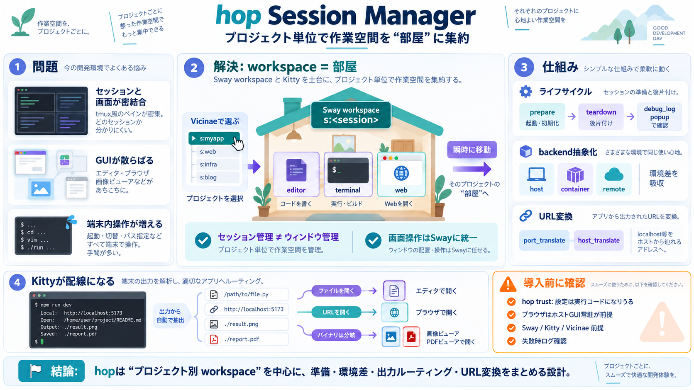

Overview
The Hop CLI allows you to manage and control every aspect of your Hop projects. It acts as a command-line replacement fo…

Sway workspace と Kitty を土台に、プロジェクト単位で作業空間を“集約”するセッション管理ツール。
tmux 等は「セッション（何を動かすか）」と「ウィンドウ（画面）」が強く結びつきやすい。
hop はプロジェクトごとに専用の Sway workspace を用意し、エディタ・ターミナル・ブラウザ等を同じ空間にまとめる。
hopは「端末多重化」よりも「プロジェクト作業空間の統合」に重点を置き、ウィンドウ管理をOS側（Sway）に委ねる。
hopはセッションに紐づくライフサイクル（prepare / teardown）を面倒みる。
ローカル実行だけでなく、DockerコンテナやSSH先などへセッションを展開するための backend を導入する。
port_translate / host_translate が localhost 等を“ホストから辿れる”アドレスへ書き換える。
Kitty のプラグイン（kitten / hints 等）で、端末出力からファイルパスやURLを抽出し、エディタやブラウザへルーティングする。
.hop.toml は shell コマンドを含められるため、hop trust を前提に実行される（信頼していない設定は実行されない）。
外部統合のために hop run / hop wait というコマンド契約を用意し、テスト実行結果を集めやすい設計になっている。
強みは「tmux的閉鎖空間から抜けて、Sway workspaceでプロジェクトを統合」できること。
hopは「プロジェクト単位のworkspace」を軸に、セッション準備と環境差、Kitty出力のルーティング、URL変換まで統合しようとする設計。
The Hop CLI allows you to manage and control every aspect of your Hop projects. It acts as a command-line replacement fo…
The Hop CLI allows you to interface with Hop services through your command line. It can be used as a replacement for the…
Grouping things by project is something I've often thought about; I've settled on a zsh script that does this with tmux …
To confirm which display protocol your session is using, just open a terminal and type: `| | | --- | | ``` 1 ``` | …
In this episode, we'll look at deploying a multi-tier containerized application from Podman container, pod, or volume to…